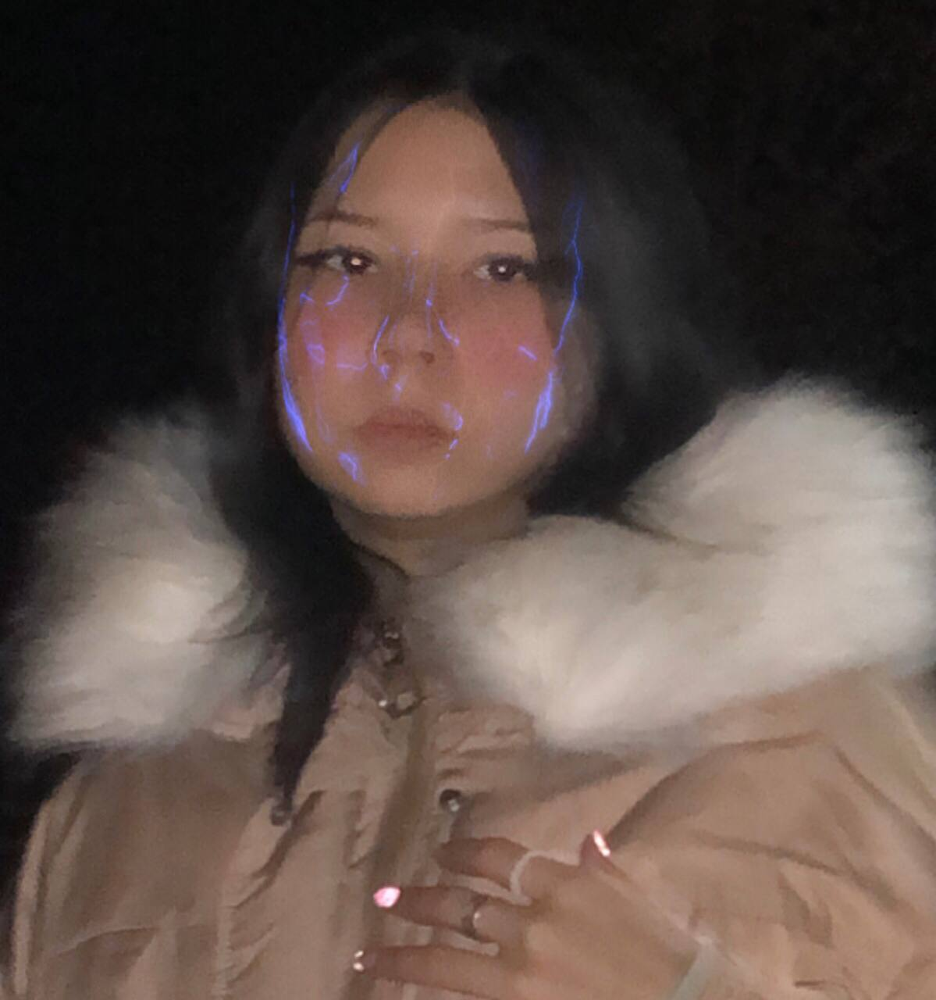
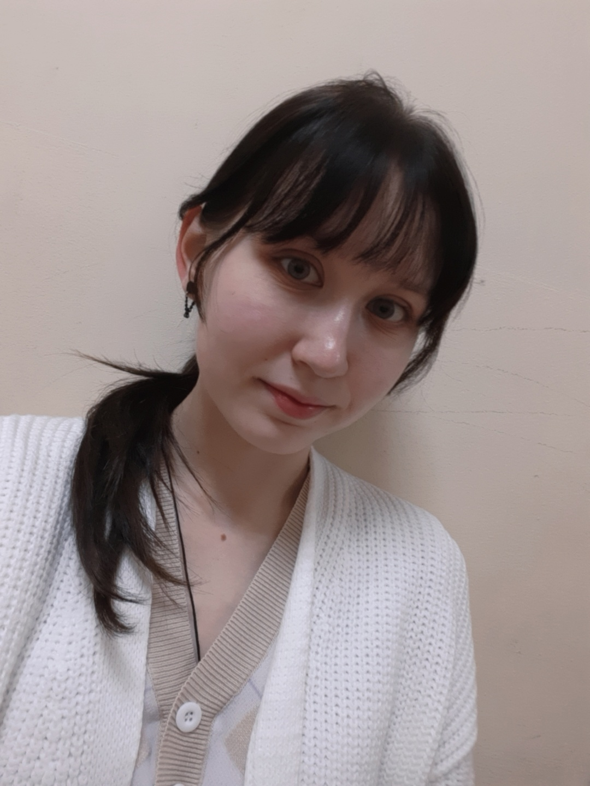
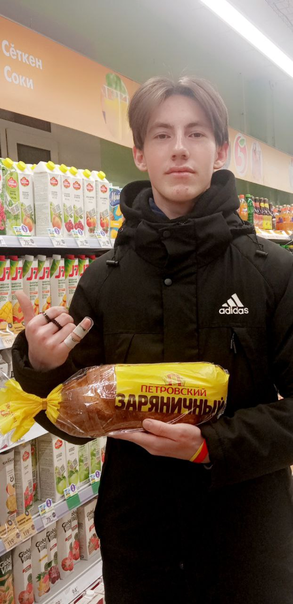
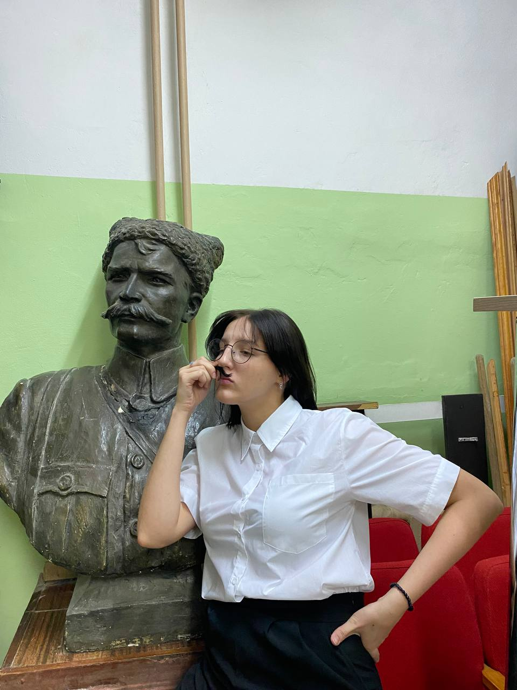
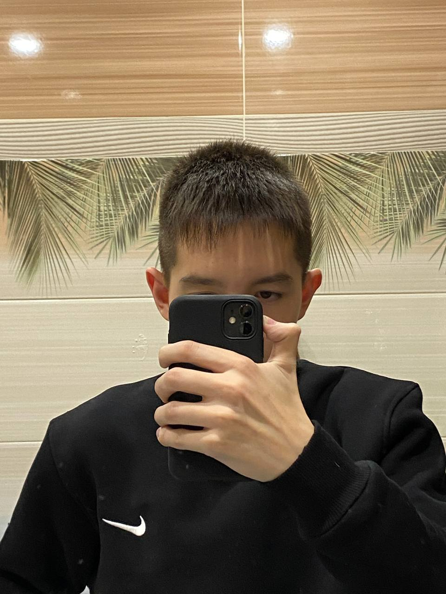
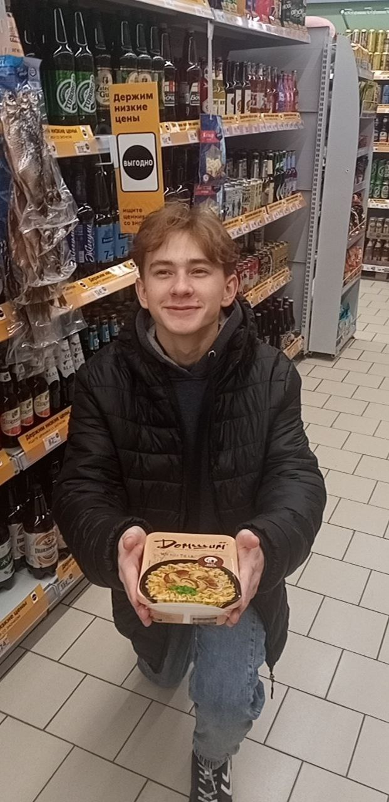

18 лет уже не за горами,
ты всё ближе и ближе к самостоятельной жизни, будь готова к ней. Не смотря на
трудности в будущем, я уверен, ты со всем справишься. Желаю, чтобы у тебя всегда было хорошее
настроение, много верных друзей, и побольше знаний. Удачи тебе в сдаче экзаменов. Высокий балл
обеспечен, ведь ты так сильно стараешься. Всего тебе наилучшего!!!

Настя
Поздравляю тебя с твоим старением на один год, но так же через год тебе будет 18, так что не огорчайся, чем дальше, тем
старше и умнее ты становишся. Желаю в этот день тебе много подарков и денег, надеюсь сможешь на них купить то что желаешь.
Пусть мы с тобой сремся почти всегда, но это не помешает нам провести всю жизнь в нашем милом кругу наших друзей и до
самой старости оставайся такой же доброй, щедрой и красивой. Желаю тебе всего наилучшего и готового.

Лера
С днем твоего рождения!
Желаю тебе неземного очарования, внутренней гармонии,
красоты душевной и солнечной радости.
Пусть успех придет к тебе во всех новых свершениях,
и цели достигаются с невероятной легкостью. Любви тебе чистейшей и
поддержки родных и самых близких людей. Будь по-женски счастлива!

Илья
Поздравляю тебя с твоим днём рождения, теперь ты практически совершеннолетняя, остался всего лишь годик). Желаю
оставаться всегда такой какая ты есть и меньше болей (если заболеешь и понадобятся лекарства напиши мне, у меня есть
купон на скидочку). 17 лет это крупная дата и не очень счастливая, случается очень много неудач, но ты держись и самое
главное не ломай пальцы, ну в общем то и всё. Побольше здоровья и счастья, ах да и самое главное любви)
Happy birthday ❤️

Аньехасео🤞
Дорогая мая, Анастасия
Вам уже исполняется 17 лет, а это ближе к 18, но это не значит, что ты стареешь, наооборот ты молодеешь и накапливаешь
жизненный опыт, тем самы становишься мудрой девушкой.
Мне очень приятно, что несмотря на то, что мы можем долго не общаться, но встретившись вновь делать вещи непонятную даже
нам самим, шутим шутки(тип того)🤔
Конечно детство у нас было неладное, но, вспоминая, можно смеется от души и думать о том, ради чего мы дрались(вот же
тупенькие мы были прикол)
Да и вапсе ты классная, АфИгИтЕлЬнАя супер пупэр красавица🤭
Я хочу пожелать тебе уверенности в сдаче экзаменов( а я уверена ты их сдашь и поступишь на бюджет), любви к себе( т.е.
продолжать делать вещи, которые нравятся тебе, а не другим) и просто счастья*в принципе можно и денежку пожелать,
никогда не мешает😏 Забыла еще написать самое важно-побывать в Корее и посетить места, которые ты бы хотела🇰🇷
Соу сараньхе✌️💕

Никита
Дорогая Настя, от всей души хочу поздравить тебя с твоим лучшим днём в этом году - с днём рождения! Ведь в этот день
собираются все люди, готовые поддержать тебя в трудную минуту, готовые постоять за тебя. Цени этих людей, ведь не каждый
способен нести ответственность за тебя.
Желаю тебе крепкого здоровья, умного и доброго парня, который готов за тебя стоять горой, не давать тебе грустить, а
дарить тебе улыбку на лице, ведь она тебе очень идет)
Оставайся такой же милой, доброй (иногда злишься, конечно, но это все пустяки), красивой и отзывчивой. Мне очень
повезло, что у меня есть такая подруга, как ты
Хочу сказать спасибо, что провела это лето вместе со мной.
И еще раз, с днём рождения 💗

Рома
Поздравляю, с торжественным днём рождения!!!
Пусть жизнь дарит тысячи счастливых возможностей, чтобы каждая из них была
использована на все сто. Счастья, удачи, благополучия! Ещё раз с днём рождения!!! Хыыы😁😁🥳